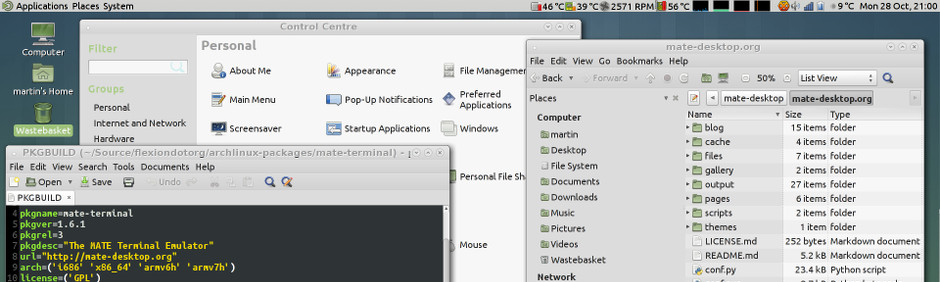
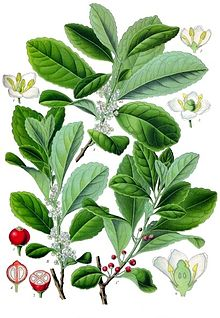

MATE Masaüstü Ortamı
MATE, GNOME 2 çatallamasıdır. Klasik metaforları kullanarak GNU/Linux ve diğer UNIX benzeri işletim sistemlerine sezgisel ve çekici bir masaüstü ortamı sağlar.
MATE geleneksel masaüstü deneyimini koruyarak yeni teknolojilerin desteklenmesi için etkin bir şekilde geliştirilmektedir. MATE’nin nasıl geliştiği ve gelecekte nelerin beklediğini öğrenmek için yol haritasına bakınız.

Daha fazla MATE ekran görüntüsü.
Haberler
- 2021-08-10 09:00 MATE 1.26 released
- 2020-02-10 09:00 MATE 1.24 released
- 2019-03-18 09:00 MATE 1.22 released
- 2018-02-07 09:00 MATE 1.20 released
- 2017-03-13 23:30 MATE 1.18 released
Blog mesajları etiketlerle endesklenir ve tarihlerine göre arşivlenir. Geniş MATE topluluğunun hangi konularda blog mesajları yayınladığını görmek için MATE Planetine bakmak isteyebilirsiniz.
Hangi dağıtımlar MATE’yi destekler?
MATE aşağıdaki GNU/Linux dağıtımlarının resmî depolarında mevcuttur.
- Alpine Linux
- Antergos
- AOSC
- Arch Linux
- Debian
- Fedora
- Gentoo
- GNU Guix ve GNU GuixSD
- Hamara Linux
- Linux Mint
- Mageia
- Manjaro
- openSUSE
- Parrot Security OS
- PCLinuxOS
- PLD Linux
- Sabayon
- Salix
- Slint
- Solus
- Trisquel GNU/Linux
- Ubuntu
- Ubuntu MATE
- Uruk GNU/Linux
- Vector Linux
- Void Linux
MATE aşağıdaki GNU/Linux dağıtımlarının resmî olmayan depolarında mevcuttur.
Belki UNIX tercih edersiniz?
Ayrıca MATE’yi destekleyen tüm dağıtımları DistroWatch.com sitesinde arayabilirsiniz..
MATE topluluğu, MATE’nin birçok dağıtıma nasıl kurulacağı hakkında belgeler hazırlamıştır. Lütfen kurulum yönergelerine bakınız.
MATE bir dizi uygulamadan oluşmaktadır. Yeniden adlandırma GNOME bileşenleri ile çakışmaları önlemek için gereklidir.
MATE, bir dizi uygulamadan oluşur. GNOME bileşenleriyle çakışmaları önlemek için yeniden adlandırma gereklidir.
Caja

Caja, MATE masaüstü ortamının resmî dosya yöneticisidir. Klasörleri taramaya, dosyaları önizlemeye ve onlarla ilişkili uygulamaları başlatmaya imkân sağlar. Aynı zamanda MATE masaüstünün ikonlarını da yönetmekle yükümlüdür. Yerel ve uzaktaki dosya sistemleri ile çalışır. Caja, Nautilus çatallamasıdır.
Pluma

Pluma standart işlevlerin çoğunu destekleyen ve bu temel işlevleri sade metin editörlerinde genelde bulunmayan başka özelliklerle genişleten bir metin editörüdür. Pluma birden çok metin dosyasını tek pencerede düzenlemeyi destekleyen (ki bu sekmeler olarak da bilinir) grafik bir uygulamadır. Pluma uluslararası metinleri düzenlenen dosyalarda UTF-8 kodlamasını kullanarak tamamıyla destekler. Özelliklerine kaynak kodun dizimini renklendirmek, otomatik girintiler, baskı ve baskıyı önizlemek de dahildir. Pluma, Gedit çatallamasıdır.
Eye of MATE
eom ya da Eye of MATE (MATE’nin gözü) MATE masaüstü için gdk-pixbuf kütüphanesini kullanan sade bir grafik görüntüleyicisidir. Büyük boyutlu resimlerle başa çıkabilir ve sabit bellek kullanımıyla yakınlaştırma ve kaydırma yapabilir. Hedefleri sadelik ve standartlarla uyumdur. Eye of MATE, Eye of GNOME (GNOME’un gözü) çatallamasıdır.
Atril
Atril sade bir çok sayfalı belge görüntüleyicisidir. PostScript (PS), Encapsulated PostScript (EPS), DJVU, DVI, XPS ve Portable Document Format (PDF) dosyalarını görüntüleyebilir ve baskılayabilir. Belge tarafından destekleniyorsa, metin aramaya, panoya metin kopyalamaya, hiper metin taramaya ve içerik tablosunda yer imlerine imkân verir. Atril, Evince çatallamasıdır.
Engrampa
Engrampa MATE ortamı için bir arşiv yöneticisidir. Arşiv oluşturmanıza ve değiştirmenize, bir arşivin içeriğini görmenize, herhangi bir arşivdeki bir dosyayı görmenize ve arşivden dosya çıkarmanıza imkân verir. Engrampa, File-Roller çatallamasıdır.
MATE Uçbirim

MATE uçbirim şu işlemleri yapmak için kullanabileceğiniz bir terminal emülatörüdür: MATE ortamında bir UNIX kabuğuna erişim, VT102, VT220 ve xterm terminalleri için tasarlanmış uygulamaları çalıştırmak. MATE uçbirimi tek pencerede birden çok terminal kullanımını (sekmeler) ve profilleri destekler. MATE uçbirimi, GNOME uçbirim çatallamasıdır.
İsmini nereden alır?
Ma-Te olarak telaffuz edilen "MATE" adını, Güney Amerika’ya mahsus çobanpüskülügiller familyasından bir bitki olan yerba mate‘den alır. Bu bitkinin yaprakları kafein içerir ve mate adı verilen bir içecek yapmak için kullanılır.
